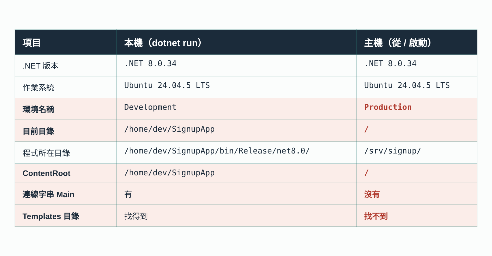
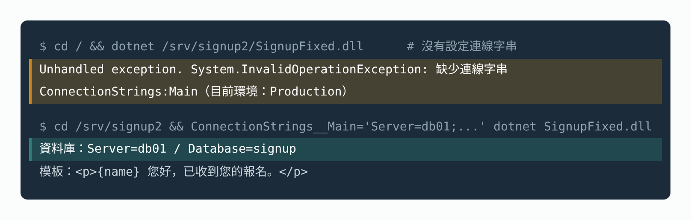

AI 寫的程式本機能跑、上線就壞：先比對兩台機器的「環境指紋」
一個報名表單網站，用 AI 幫忙寫，前後大概一個週末。在自己的筆電上按下執行，表單送得出去、確認信的內容也正確。部署到公司那台 Linux 主機、設成開機自動啟動之後，服務一啟動就掛掉，錯誤訊息說找不到 /Templates/confirm.html。
這時候最常見的反應是把錯誤訊息貼回給 AI，請它「修好」。AI 會很認真地改程式，但它看到的只有程式碼，看不到你的主機。程式在兩台機器上的行為不同，原因通常不在程式碼，而在兩台機器之間的差異。 所以第一步不是改程式，而是把差異找出來。
以下用一個 ASP.NET Core 的示範情境（系統名稱、路徑、帳號都是虛構的）說明三個最常見的原因，以及怎麼一次把它們找出來。
先把兩台機器的「環境指紋」印出來
與其一個一個猜，不如讓程式自己說出它在什麼環境裡跑。下面這段放在 Program.cs 最前面，帶 --fingerprint 參數啟動時，只印出環境資訊就結束，不會真的啟動網站：
using System.Runtime.InteropServices;
var builder = WebApplication.CreateBuilder(args);
// ── 環境指紋：本機和主機各跑一次，把兩份輸出並排比對 ──
if (args.Contains("--fingerprint"))
{
var env = builder.Environment;
var cfg = builder.Configuration;
Console.WriteLine($".NET 版本 : {RuntimeInformation.FrameworkDescription}");
Console.WriteLine($"作業系統 : {RuntimeInformation.OSDescription}");
Console.WriteLine($"環境名稱 : {env.EnvironmentName}");
Console.WriteLine($"目前目錄 : {Directory.GetCurrentDirectory()}");
Console.WriteLine($"程式所在目錄 : {AppContext.BaseDirectory}");
Console.WriteLine($"ContentRoot : {env.ContentRootPath}");
Console.WriteLine($"連線字串 Main : {(cfg.GetConnectionString("Main") is null ? "沒有" : "有")}");
Console.WriteLine($"Templates 目錄: {(Directory.Exists("Templates") ? "找得到" : "找不到")}（以目前目錄為準）");
return;
}
注意連線字串只印「有」或「沒有」，不要把內容印出來，避免密碼出現在畫面或 log 裡。
本機用 dotnet run -- --fingerprint 跑一次；主機用跟服務相同的方式跑一次。這個示範裡，服務是由 systemd 啟動，而且設定檔沒有指定工作目錄，所以在主機上要從根目錄 / 啟動，才能重現服務實際的狀況。兩份輸出並排：

示範是在同一台 Linux 上模擬兩種啟動方式，所以版本和作業系統兩欄相同。實際情況裡，本機常常是 Windows 或 macOS，這兩欄通常也會不一樣。
「程式所在目錄」本來就會不同，除此之外還有五行不一樣，每一行都是一條線索。接下來逐一看。
原因一：本機是 Development，主機是 Production
dotnet run 和 Visual Studio 啟動時，會讀專案裡的 Properties/launchSettings.json，裡面預設寫著 ASPNETCORE_ENVIRONMENT=Development。於是本機會載入 appsettings.Development.json。
這個示範專案的連線字串只放在 appsettings.Development.json，程式裡還多了一個「找不到就用預設值」的備案：
// ── AI 產生的原始寫法 ──
var connStr = builder.Configuration.GetConnectionString("Main")
?? "Server=localhost;Database=signup;User Id=sa;Password=123456";
var template = File.ReadAllText("Templates/confirm.html");
到了主機上，systemd 不會讀 launchSettings.json，沒有設定環境名稱時，ASP.NET Core 一律當成 Production。appsettings.Development.json 雖然被一起發佈到主機上，但不會被載入。連線字串讀不到，程式也不會報錯，而是悄悄改用預設值：
$ cd /srv/signup && dotnet SignupApp.dll # 補上 Templates 之後再跑
資料庫：Server=localhost / Database=signup
模板：<p>{name} 您好，已收到您的報名。</p>
啟動成功了，但連的是主機本機上一個不存在（或更糟：存在但不是正式資料）的資料庫。錯誤會在第一個使用者送出表單時才出現，而且看起來像「資料庫連不上」，離真正的原因很遠。
修法是讓缺設定的程式在啟動時就停下來，並把環境名稱寫進錯誤訊息：
// ── 修正後的寫法 ──
// 1. 缺設定就在啟動時停下來，不要默默改用預設值
var connStr = builder.Configuration.GetConnectionString("Main")
?? throw new InvalidOperationException(
$"缺少連線字串 ConnectionStrings:Main（目前環境：{builder.Environment.EnvironmentName}）");
主機上的連線字串則用環境變數提供。ASP.NET Core 會把環境變數名稱裡的雙底線 __ 對應成設定的冒號，所以 ConnectionStrings__Main 就是 ConnectionStrings:Main。
原因二：相對路徑是相對於「從哪裡啟動」
File.ReadAllText("Templates/confirm.html") 這種相對路徑，是以「目前目錄」為起點，不是以程式檔案所在的位置為起點。本機在專案資料夾裡 dotnet run，目前目錄剛好就是專案資料夾，所以找得到。
主機上就不一樣了。依 systemd 文件的說明，系統服務如果沒有設定 WorkingDirectory，目前目錄是根目錄 /（本文環境無法執行 systemd，所以用「從 / 啟動」來重現），程式就去找 /Templates/confirm.html：
$ cd / && dotnet /srv/signup/SignupApp.dll
Unhandled exception. System.IO.DirectoryNotFoundException: Could not find a part of the path '/Templates/confirm.html'.
（以下堆疊省略）
指紋裡還藏著一個更隱蔽的問題：ContentRoot 也是 /。ASP.NET Core 預設用目前目錄當 ContentRoot，而 appsettings.json 是從 ContentRoot 讀的。也就是說，從 / 啟動時，連 /srv/signup/appsettings.json 都沒有被讀到。這種情況不會有任何錯誤訊息，只會覺得「設定好像沒生效」。（Windows 服務也有類似的情況，目前目錄通常是 C:\Windows\System32；本文環境沒有 Windows，這點沒有實際驗證。）
就算把 systemd 的工作目錄設對，問題也還沒結束：
$ cd /srv/signup && dotnet SignupApp.dll
Unhandled exception. System.IO.DirectoryNotFoundException: Could not find a part of the path '/srv/signup/Templates/confirm.html'.
這次路徑是對的，但檔案根本不在主機上。dotnet publish 預設不會帶上 Templates 資料夾裡的 .html 檔，本機跑得起來，是因為 dotnet run 直接用專案資料夾裡的檔案。
所以修法有三處，缺一不可：
// 2. 路徑以程式所在目錄為準，不受「從哪裡啟動」影響
var templatePath = Path.Combine(AppContext.BaseDirectory, "Templates", "confirm.html");
var template = File.ReadAllText(templatePath);
<!-- SignupApp.csproj：發佈時把 Templates 一起帶上 -->
<ItemGroup>
<None Update="Templates\**" CopyToOutputDirectory="PreserveNewest" />
</ItemGroup>
# /etc/systemd/system/signup.service（節錄；本文環境無法執行 systemd，這段未實際驗證）
[Service]
WorkingDirectory=/srv/signup
ExecStart=/usr/bin/dotnet /srv/signup/SignupApp.dll
EnvironmentFile=/etc/signup/signup.env
signup.env 裡放 ConnectionStrings__Main=...，檔案權限設成只有服務帳號讀得到，不要把密碼直接寫在 service 檔或版控裡。
原因三：建置用的 .NET 版本，主機上沒有
專案的目標版本（TargetFramework）通常跟著建立專案那台電腦上的 SDK 走。如果本機裝的是 .NET 9、專案也設成 net9.0，而主機只裝了 .NET 8，程式連第一行都跑不到。
本文環境只有 .NET 8，所以我把發佈結果裡 SignupApp.runtimeconfig.json 的版本從 8.0.0 改成 9.0.0，模擬「用 .NET 9 建置、主機只有 .NET 8」。實際執行的輸出（節錄）：
$ dotnet SignupApp.dll
You must install or update .NET to run this application.
App: /tmp/v9/SignupApp.dll
Architecture: x64
Framework: 'Microsoft.NETCore.App', version '9.0.0' (x64)
.NET location: /usr/lib/dotnet/
The following frameworks were found:
8.0.34 at [/usr/lib/dotnet/shared/Microsoft.NETCore.App]
這個錯誤訊息其實寫得很清楚：要的是 9.0.0，找到的是 8.0.34。修法看情況二選一：在主機上安裝對應的執行環境，或把專案的 TargetFramework 改成主機有的版本再重新建置。部署前先在主機上跑一次 dotnet --list-runtimes，就能避開。
同樣的道理也適用其他技術：Laravel 專案要確認 composer.lock 有進版控、主機的 PHP 版本符合要求；Node 專案則是 package-lock.json 與 Node 版本。版本差異不一定會讓程式啟動失敗，有時只是某個函式的行為不同，更難找。
修正後再跑一次
三個地方改完之後，同樣在主機上測兩種情況：沒給連線字串、以及設好工作目錄與環境變數：

第一種情況雖然還是失敗，但錯誤訊息直接說出缺什麼、在哪個環境，不需要再猜。第二種情況用 shell 指令模擬 systemd 的 WorkingDirectory 與環境變數。
整理成排查順序：

本文的 C# 程式、指紋輸出、三種錯誤訊息與修正後的結果，都在 Ubuntu 24.04、.NET SDK 8.0.134（執行環境 8.0.34）實際執行過，輸出與文中相同。.NET 9 的版本錯誤是修改 runtimeconfig 模擬的；systemd 設定檔與 Windows 服務的部分沒有實際執行。
學到什麼
- 「本機能跑、上線就壞」幾乎都是環境差異，不是程式邏輯錯誤。先比對差異，再決定改哪裡，比把錯誤訊息丟回給 AI 反覆修改快得多。
- 讀不到設定時改用預設值，會把錯誤延後到最難查的時候才出現。缺設定就在啟動時停下來。
- 相對路徑相對的是「從哪裡啟動」，而且
dotnet run會掩蓋 publish 少帶檔案的問題。部署前，至少用發佈後的檔案、照服務的啟動方式跑一次。 - AI 看不到你的主機。把環境指紋的輸出一起交給它（或交給接手的工程師），討論才有共同的基礎。
如果你用 AI 做出來的系統卡在「本機好好的、上線就壞」，問達工作室可以幫你把兩邊的差異找出來，修到能穩定在主機上跑。